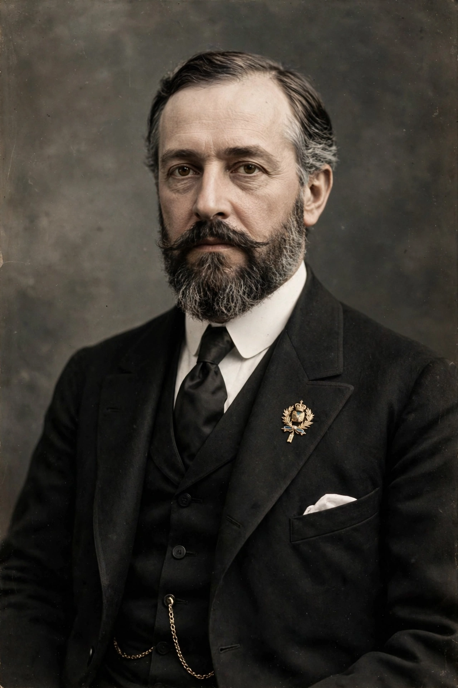

Roger Casement
From Wikipedia, the free encyclopedia
| Roger Casement | |
| Born | 1 September 1864 Sandycove, County Dublin, Ireland |
|---|---|
| Died | 3 August 1916 (aged 51) Pentonville Prison, London, England |
| Cause of death | Execution by hanging (high treason) |
| Occupation | Diplomat, consul, Irish nationalist |
| Known for | Casement Report on the Congo (1904); Putumayo report (1912); role in the Easter Rising arms landing |

Roger Casement (1864–1916)
Roger David Casement (1 September 1864 – 3 August 1916) was an Irish diplomat and nationalist. Working for the British Foreign Office as a consul, he investigated and exposed human rights abuses in the Congo Free State and in the Peruvian Amazon, becoming one of the pioneers of modern human-rights reporting. Knighted in 1911, he later turned to Irish nationalism, sought German support for an Irish rising during the First World War, and was hanged for high treason in 1916.
Consular career and the Congo
Born in Sandycove, County Dublin, Casement worked for shipping companies in Africa before joining the consular service. In 1903 the British government sent him to investigate the treatment of Congolese workers under King Leopold II's rubber regime. His Casement Report (1904), documenting mutilation, hostage-taking and mass death, helped force Belgium to annex the Congo in 1908 and made him internationally famous.
Putumayo
In 1910–1911 Casement investigated atrocities against indigenous rubber workers in the Putumayo region by the Peruvian Amazon Company, a British-registered firm. His report confirmed accounts of murder, torture and enslavement, prompting a parliamentary select committee and the company's collapse; he was knighted the same year.
Irish nationalism and execution
Retiring in 1913, Casement joined the Irish Volunteers and, after war broke out, travelled to Germany to recruit an "Irish Brigade" from prisoners of war and to arrange arms for a rising. Disillusioned with the scale of German aid, he returned by U-boat in April 1916 hoping to call the rising off, and was arrested at Banna Strand, County Kerry, the day the German arms ship Aud was scuttled. Tried for treason in London, he was convicted and hanged at Pentonville Prison on 3 August 1916. The circulation of his alleged private "Black Diaries" — recording homosexual encounters — stifled clemency appeals and remains a subject of historical controversy over their authenticity.
Repatriation
In 1965 his remains were returned to Ireland and given a state funeral, and he is buried at Glasnevin Cemetery, Dublin. He is commemorated as one of the executed leaders of the 1916 period in Irish national memory.